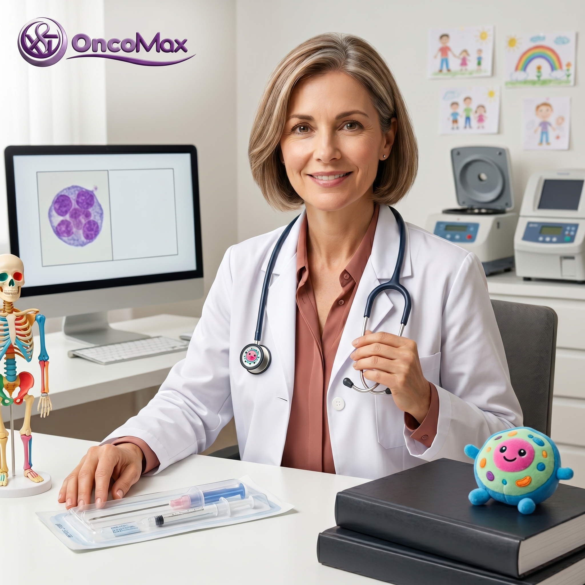
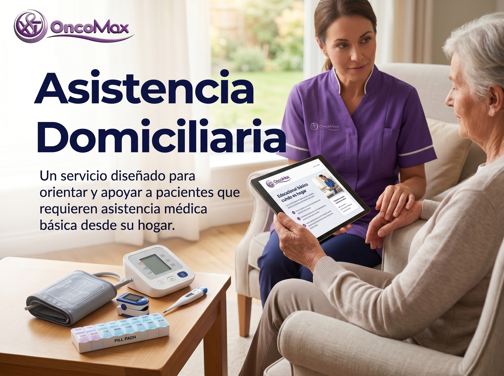

Dra. Elena Rosales Sokolov
Especialista en oncologia quirurgica
Profesional enfocada en evaluacion y tratamiento quirurgico de pacientes oncologicos.
Reservar consultaOncologia y acompañamiento experto.
Especialista en oncologia quirurgica
Profesional enfocada en evaluacion y tratamiento quirurgico de pacientes oncologicos.
Reservar consulta
Especialista en oncologia medica e inmuno-oncologia
Profesional orientada al tratamiento integral y seguimiento clinico del paciente.
Reservar consulta
Servicio pensado para orientar y acompañar a pacientes que requieren apoyo medico basico desde casa.